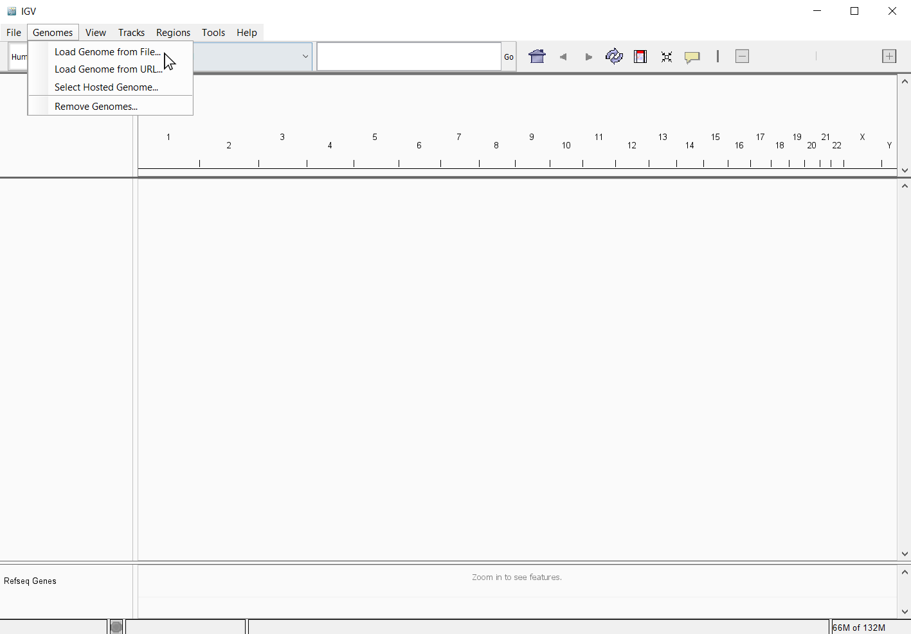
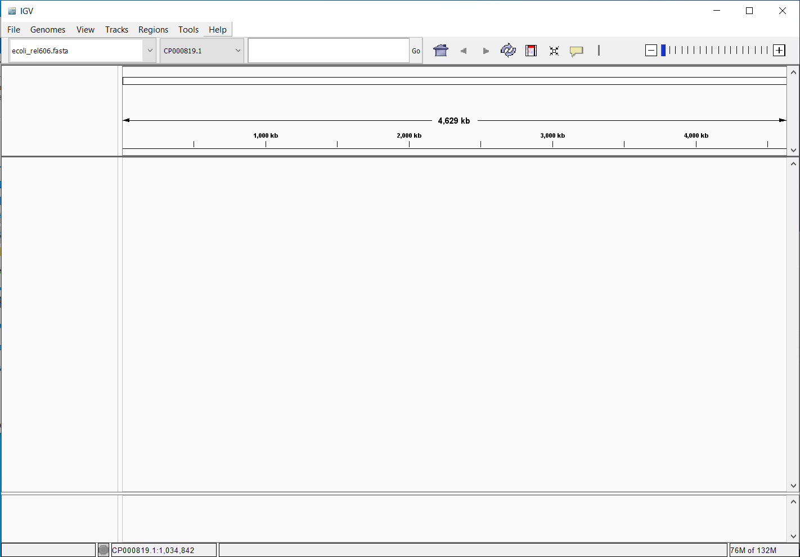
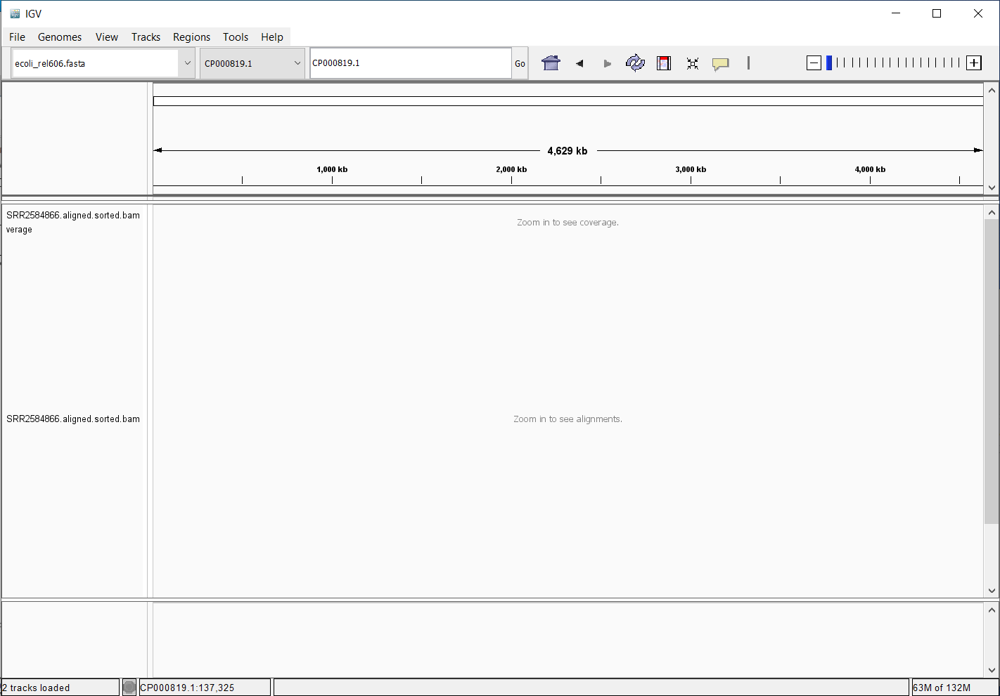
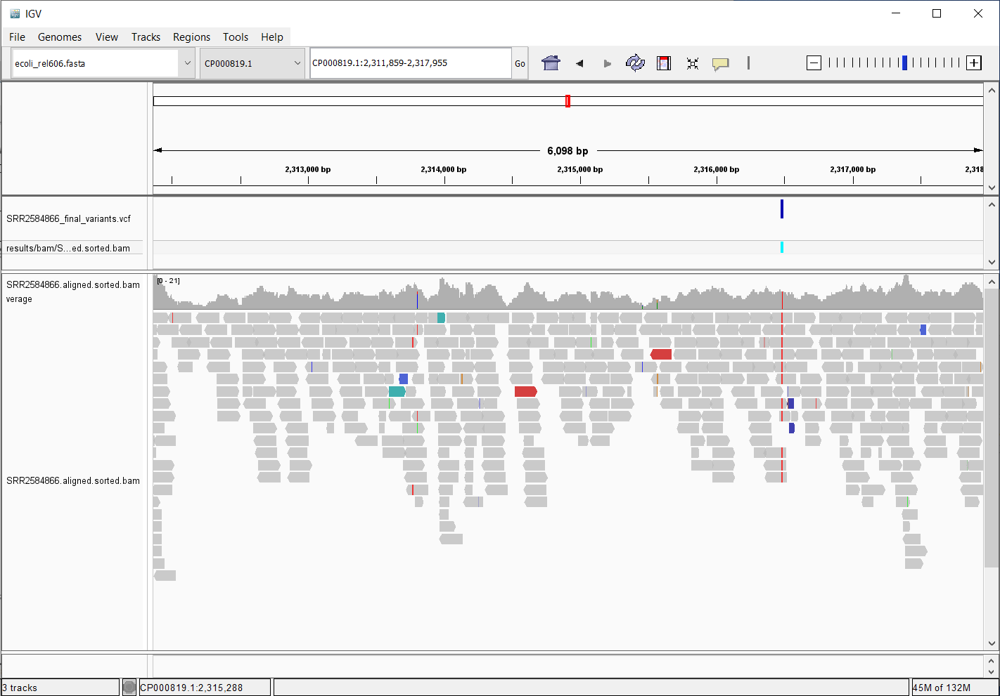

4 Variant calling workflow
We mentioned before that we are working with files from a long-term evolution study of an E. coli population (designated Ara-3). Now that we have looked at our data to make sure that it is high quality, and removed low-quality base calls, we can perform variant calling to see how the population changed over time. We care how this population changed relative to the original population, E. coli strain REL606. Therefore, we will align each of our samples to the E. coli REL606 reference genome, and see what differences exist in our reads versus the genome.
4.1 Alignment to a reference genome
We perform read alignment or mapping to determine where in the genome our reads originated from. There are a number of tools to choose from and, while there is no gold standard, there are some tools that are better suited for particular NGS analyses. We will be using the Burrows Wheeler Aligner (BWA) by Li and Durbin (2010), which is a software package for mapping low-divergent sequences against a large reference genome.
The alignment process consists of two steps:
- Indexing the reference genome
- Aligning the reads to the reference genome
4.2 Setting up
4.3 Index the reference genome
Let’s make sure we are back in the dc_workshop directory and that the two directories are where we hope they are:
$ cd ~/dc_workshop/
$ ls -F data/
ref_genome/ trimmed_fastq_small/ untrimmed_fastq/
$ ls -F data/ref_genome/
ecoli_rel606.fasta*You will also need to create directories for the results that will be generated as part of this workflow. We can do this in a single line of code, because mkdir can accept multiple new directory names as input.
$ mkdir -p results/sam results/bam results/bcf results/vcfOur first step is to index the reference genome for use by BWA.
$ source package /nbi/software/production/bin/bwa-0.7.5
loaded /nbi/software/production/bin/bwa-0.7.5Indexing allows the aligner to quickly find potential alignment sites for query sequences in a genome, which saves time during alignment. Indexing the reference only has to be run once. The only reason you would want to create a new index is if you are working with a different reference genome or you are using a different tool for alignment.
$ bwa index data/ref_genome/ecoli_rel606.fastaWhile the index is created, you will see output that looks something like this:
[bwa_index] Pack FASTA... 0.15 sec
[bwa_index] Construct BWT for the packed sequence...
[bwa_index] 3.01 seconds elapse.
[bwa_index] Update BWT... 0.05 sec
[bwa_index] Pack forward-only FASTA... 0.05 sec
[bwa_index] Construct SA from BWT and Occ... 0.89 sec
[main] Version: 0.7.5-r404
[main] CMD: bwa index data/ref_genome/ecoli_rel606.fasta
[main] Real time: 4.348 sec; CPU: 4.160 secBWA consists of three algorithms: BWA-backtrack, BWA-SW and BWA-MEM. The first algorithm is designed for Illumina sequence reads up to 100bp, while the other two are for sequences ranging from 70bp to 1Mbp. BWA-MEM and BWA-SW share similar features such as long-read support and split alignment, but BWA-MEM, which is the latest, is generally recommended for high-quality queries as it is faster and more accurate.
4.4 Align reads to the reference genome
The alignment process consists of choosing an appropriate reference genome to map our reads against and then deciding on an aligner. We will use the BWA-MEM algorithm, which is the latest and is generally recommended for high-quality queries as it is faster and more accurate.
An example of what a bwa command looks like is below. This command will not run, as we do not have the files ref_genome.fa, input_file_R1.fastq, or input_file_R2.fastq.
$ bwa mem ref_genome.fasta input_file_R1.fastq input_file_R2.fastq > output.samHave a look at the bwa options page. While we are running bwa with the default parameters here, your use case might require a change of parameters.
Always read the manual page for any tool before using and make sure the options you use are appropriate for your data.
We are going to start by aligning the reads from just one of the samples in our data set (SRR2584866). Later, we will be iterating this whole process on all of our sample files.
$ bwa mem data/ref_genome/ecoli_rel606.fasta \
data/trimmed_fastq_small/SRR2584866_1.trim.sub.fastq \
data/trimmed_fastq_small/SRR2584866_2.trim.sub.fastq > \
results/sam/SRR2584866.aligned.samYou will see output that starts like this:
[M::main_mem] read 77446 sequences (10000033 bp)...
[M::mem_pestat] # candidate unique pairs for (FF, FR, RF, RR): (48, 36779, 21, 61)
[M::mem_pestat] analyzing insert size distribution for orientation FF...
[M::mem_pestat] (25, 50, 75) percentile: (420, 660, 1774)
[M::mem_pestat] low and high boundaries for computing mean and std.dev: (1, 4482)
[M::mem_pestat] mean and std.dev: (784.68, 700.87)
[M::mem_pestat] low and high boundaries for proper pairs: (1, 5836)
[M::mem_pestat] analyzing insert size distribution for orientation FR...
[M::mem_pestat] (25, 50, 75) percentile: (221, 361, 576)
[M::mem_pestat] low and high boundaries for computing mean and std.dev: (1, 1286)It should take less than a minute to be complete.
4.4.1 SAM/BAM format
The SAM file for “sequence alignment map”, is a tab-delimited text file that contains information for each individual read and its alignment to the genome. While we do not have time to go into detail about the features of the SAM format, the paper by Li et al. (2009) provides a lot more detail on the specification.
The compressed binary version of SAM is called a BAM file for “binary sequence alignment map”. We use this version to reduce size and to allow for indexing, which enables efficient random access of the data contained within the file.
The file begins with a header, which is optional. The header is used to describe the source of data, reference sequence, method of alignment, etc., this will change depending on the aligner being used. Following the header is the alignment section. Each line that follows corresponds to alignment information for a single read. Each alignment line has 11 mandatory fields for essential mapping information and a variable number of other fields for aligner specific information. An example entry from a SAM file is displayed below with the different fields highlighted.


We will convert the SAM file to BAM format using the samtools program (Li et al. 2009) with the view command and tell this command that the input is in SAM format (-S) and to output BAM format (-b):
$ source package /tsl/software/testing/bin/samtools-1.9
$ samtools view -S -b results/sam/SRR2584866.aligned.sam > results/bam/SRR2584866.aligned.bam
[samopen] SAM header is present: 1 sequences.4.4.2 Sort BAM file by coordinates
Next we sort the BAM file using the sort command from samtools. -o tells the command where to write the output. Our files are pretty small, so we will not see this output. If you run the workflow with larger files, you will see something like this:
$ samtools sort -o results/bam/SRR2584866.aligned.sorted.bam results/bam/SRR2584866.aligned.bam
[bam_sort_core] merging from 2 files...SAM/BAM files can be sorted in multiple ways, e.g. by location of alignment on the chromosome, by read name, etc. It is important to be aware that different alignment tools will output differently sorted SAM/BAM, and different downstream tools require differently sorted alignment files as input.
You can use samtools to learn more about this BAM file as well.
$ samtools flagstat results/bam/SRR2584866.aligned.sorted.bamThis will give you the following statistics about your sorted bam file:
351169 + 0 in total (QC-passed reads + QC-failed reads)
0 + 0 secondary
1169 + 0 supplementary
0 + 0 duplicates
351103 + 0 mapped (99.98% : N/A)
350000 + 0 paired in sequencing
175000 + 0 read1
175000 + 0 read2
346688 + 0 properly paired (99.05% : N/A)
349876 + 0 with itself and mate mapped
58 + 0 singletons (0.02% : N/A)
0 + 0 with mate mapped to a different chr
0 + 0 with mate mapped to a different chr (mapQ>=5)4.5 Variant calling
A variant call is a conclusion that there is a nucleotide difference vs. some reference at a given position in an individual genome or transcriptome, often referred to as a Single Nucleotide Variant (SNV). The call is usually accompanied by an estimate of variant frequency and some measure of confidence. Similar to other steps in this workflow, there are a number of tools available for variant calling. In this workshop we will be using bcftools, but there are a few things we need to do before actually calling the variants.
$ source package /tsl/software/testing/bin/bcftools-1.9
loaded /tsl/software/testing/bin/bcftools-1.94.5.1 Step 1: Calculate the read coverage of positions in the genome
Do the first pass on variant calling by counting read coverage with bcftools. We will use the command mpileup. The flag -O b tells bcftools to generate a bcf format output file, -o specifies where to write the output file, and -f flags the path to the reference genome:
$ bcftools mpileup -O b -o results/bcf/SRR2584866_raw.bcf \
-f data/ref_genome/ecoli_rel606.fasta results/bam/SRR2584866.aligned.sorted.bam
[mpileup] 1 samples in 1 input files
...It should take less than 1 minute to finish.
We have now generated a file with coverage information for every base.
4.5.2 Step 2: Detect the single nucleotide variants (SNVs)
Identify SNVs using bcftools call. We have to specify ploidy with the flag --ploidy, which is one for the haploid E. coli. -m allows for multi-allelic and rare-variant calling, -v tells the program to output variant sites only (not every site in the genome), and -o specifies where to write the output file:
$ bcftools call --ploidy 1 -m -v -o results/vcf/SRR2584866_variants.vcf results/bcf/SRR2584866_raw.bcf 4.5.3 Step 3: Filter and report the SNV variants in variant calling format (VCF)
Filter the SNVs for the final output in VCF format, using vcfutils.pl:
$ vcfutils.pl varFilter results/vcf/SRR2584866_variants.vcf > results/vcf/SRR2584866_final_variants.vcf4.6 Explore the VCF format
$ less -S results/vcf/SRR2584866_final_variants.vcfYou will see the header (which describes the format), the time and date the file was created, the version of bcftools that was used, the command line parameters used, and some additional information:
##fileformat=VCFv4.2
##FILTER=<ID=PASS,Description="All filters passed">
##bcftoolsVersion=1.8+htslib-1.8
##bcftoolsCommand=mpileup -O b -o results/bcf/SRR2584866_raw.bcf -f data/ref_genome/ecoli_rel606.fasta results/bam/SRR2584866.aligned.sorted.bam
##reference=file://data/ref_genome/ecoli_rel606.fasta
##contig=<ID=CP000819.1,length=4629812>
##ALT=<ID=*,Description="Represents allele(s) other than observed.">
##INFO=<ID=INDEL,Number=0,Type=Flag,Description="Indicates that the variant is an INDEL.">
##INFO=<ID=IDV,Number=1,Type=Integer,Description="Maximum number of reads supporting an indel">
##INFO=<ID=IMF,Number=1,Type=Float,Description="Maximum fraction of reads supporting an indel">
##INFO=<ID=DP,Number=1,Type=Integer,Description="Raw read depth">
##INFO=<ID=VDB,Number=1,Type=Float,Description="Variant Distance Bias for filtering splice-site artefacts in RNA-seq data (bigger is better)",Version=
##INFO=<ID=RPB,Number=1,Type=Float,Description="Mann-Whitney U test of Read Position Bias (bigger is better)">
##INFO=<ID=MQB,Number=1,Type=Float,Description="Mann-Whitney U test of Mapping Quality Bias (bigger is better)">
##INFO=<ID=BQB,Number=1,Type=Float,Description="Mann-Whitney U test of Base Quality Bias (bigger is better)">
##INFO=<ID=MQSB,Number=1,Type=Float,Description="Mann-Whitney U test of Mapping Quality vs Strand Bias (bigger is better)">
##INFO=<ID=SGB,Number=1,Type=Float,Description="Segregation based metric.">
##INFO=<ID=MQ0F,Number=1,Type=Float,Description="Fraction of MQ0 reads (smaller is better)">
##FORMAT=<ID=PL,Number=G,Type=Integer,Description="List of Phred-scaled genotype likelihoods">
##FORMAT=<ID=GT,Number=1,Type=String,Description="Genotype">
##INFO=<ID=ICB,Number=1,Type=Float,Description="Inbreeding Coefficient Binomial test (bigger is better)">
##INFO=<ID=HOB,Number=1,Type=Float,Description="Bias in the number of HOMs number (smaller is better)">
##INFO=<ID=AC,Number=A,Type=Integer,Description="Allele count in genotypes for each ALT allele, in the same order as listed">
##INFO=<ID=AN,Number=1,Type=Integer,Description="Total number of alleles in called genotypes">
##INFO=<ID=DP4,Number=4,Type=Integer,Description="Number of high-quality ref-forward , ref-reverse, alt-forward and alt-reverse bases">
##INFO=<ID=MQ,Number=1,Type=Integer,Description="Average mapping quality">
##bcftools_callVersion=1.8+htslib-1.8
##bcftools_callCommand=call --ploidy 1 -m -v -o results/bcf/SRR2584866_variants.vcf results/bcf/SRR2584866_raw.bcf; Date=Tue Oct 9 18:48:10 2018Followed by information on each of the variations observed:
#CHROM POS ID REF ALT QUAL FILTER INFO FORMAT results/bam/SRR2584866.aligned.sorted.bam
CP000819.1 1521 . C T 207 . DP=9;VDB=0.993024;SGB=-0.662043;MQSB=0.974597;MQ0F=0;AC=1;AN=1;DP4=0,0,4,5;MQ=60
CP000819.1 1612 . A G 225 . DP=13;VDB=0.52194;SGB=-0.676189;MQSB=0.950952;MQ0F=0;AC=1;AN=1;DP4=0,0,6,5;MQ=60
CP000819.1 9092 . A G 225 . DP=14;VDB=0.717543;SGB=-0.670168;MQSB=0.916482;MQ0F=0;AC=1;AN=1;DP4=0,0,7,3;MQ=60
CP000819.1 9972 . T G 214 . DP=10;VDB=0.022095;SGB=-0.670168;MQSB=1;MQ0F=0;AC=1;AN=1;DP4=0,0,2,8;MQ=60 GT:PL
CP000819.1 10563 . G A 225 . DP=11;VDB=0.958658;SGB=-0.670168;MQSB=0.952347;MQ0F=0;AC=1;AN=1;DP4=0,0,5,5;MQ=60
CP000819.1 22257 . C T 127 . DP=5;VDB=0.0765947;SGB=-0.590765;MQSB=1;MQ0F=0;AC=1;AN=1;DP4=0,0,2,3;MQ=60 GT:PL
CP000819.1 38971 . A G 225 . DP=14;VDB=0.872139;SGB=-0.680642;MQSB=1;MQ0F=0;AC=1;AN=1;DP4=0,0,4,8;MQ=60 GT:PL
CP000819.1 42306 . A G 225 . DP=15;VDB=0.969686;SGB=-0.686358;MQSB=1;MQ0F=0;AC=1;AN=1;DP4=0,0,5,9;MQ=60 GT:PL
CP000819.1 45277 . A G 225 . DP=15;VDB=0.470998;SGB=-0.680642;MQSB=0.95494;MQ0F=0;AC=1;AN=1;DP4=0,0,7,5;MQ=60
CP000819.1 56613 . C G 183 . DP=12;VDB=0.879703;SGB=-0.676189;MQSB=1;MQ0F=0;AC=1;AN=1;DP4=0,0,8,3;MQ=60 GT:PL
CP000819.1 62118 . A G 225 . DP=19;VDB=0.414981;SGB=-0.691153;MQSB=0.906029;MQ0F=0;AC=1;AN=1;DP4=0,0,8,10;MQ=59
CP000819.1 64042 . G A 225 . DP=18;VDB=0.451328;SGB=-0.689466;MQSB=1;MQ0F=0;AC=1;AN=1;DP4=0,0,7,9;MQ=60 GT:PLThis is a lot of information, so let’s take some time to make sure we understand our output.
The first few columns represent the information we have about a predicted variation.
| column | info |
|---|---|
| CHROM | contig location where the variation occurs |
| POS | position within the contig where the variation occurs |
| ID | a . until we add annotation information |
| REF | reference genotype (forward strand) |
| ALT | sample genotype (forward strand) |
| QUAL | Phred-scaled probability that the observed variant exists at this site (higher is better) |
| FILTER | a . if no quality filters have been applied, PASS if a filter is passed, or the name of the filters this variant failed |
In an ideal world, the information in the QUAL column would be all we needed to filter out bad variant calls. However, in reality we need to filter on multiple other metrics.
The last two columns contain the genotypes and can be tricky to decode.
| column | info |
|---|---|
| FORMAT | lists in order the metrics presented in the final column |
| results | lists the values associated with those metrics in order |
For our file, the metrics presented are GT:PL:GQ.
| metric | definition |
|---|---|
| AD, DP | the depth per allele by sample and coverage |
| GT | the genotype for the sample at this loci. For a diploid organism, the GT field indicates the two alleles carried by the sample, encoded by a 0 for the REF allele, 1 for the first ALT allele, 2 for the second ALT allele, etc. A 0/0 means homozygous reference, 0/1 is heterozygous, and 1/1 is homozygous for the alternate allele. |
| PL | the likelihoods of the given genotypes |
| GQ | the Phred-scaled confidence for the genotype |
The Broad Institute’s VCF guide is an excellent place to learn more about the VCF file format.
4.7 Visualize and assess the alignment
It is often instructive to look at your data in a genome browser. Visualization will allow you to get a “feel” for the data, as well as detecting abnormalities and problems. Also, exploring the data in such a way may give you ideas for further analyses. As such, visualization tools are useful for exploratory analysis. In this lesson we will describe two different tools for visualization: a light-weight command-line based one and the Broad Institute’s Integrative Genomics Viewer (IGV) which requires software installation and transfer of files.
In order for us to visualize the alignment files, we will need to index the BAM file using samtools:
$ samtools index results/bam/SRR2584866.aligned.sorted.bam4.7.1 Visualization with tview
Samtools implements a very simple text alignment viewer based on the GNU ncurses library, called tview. This alignment viewer works with short indels and shows MAQ consensus. It uses different colors to display mapping quality or base quality, subjected to users’ choice. Samtools viewer is known to work with a 130 GB alignment swiftly. Due to its text interface, displaying alignments over network is also very fast.
In order to visualize our mapped reads, we use tview, giving it the sorted bam file and the reference file:
$ samtools tview results/bam/SRR2584866.aligned.sorted.bam data/ref_genome/ecoli_rel606.fasta1 11 21 31 41 51 61 71 81 91 101 111 121
AGCTTTTCATTCTGACTGCAACGGGCAATATGTCTCTGTGTGGATTAAAAAAAGAGTGTCTGATAGCAGCTTCTGAACTGGTTACCTGCCGTGAGTAAATTAAAATTTTATTGACTTAGGTCACTAAATAC
..................................................................................................................................
,,,,,,,,,,,,,,,,,,,,,,,,,,,,,,,,,,,, ..................N................. ,,,,,,,,,,,,,,,,,,,,,,,,,,,,,,,,........................
,,,,,,,,,,,,,,,,,,,,,,,,,,,,,,,,,,, ..................N................. ,,,,,,,,,,,,,,,,,,,,,,,,,,,.............................
...................................,g,,,,,,,,,,,,,,,,,,,,,,,,,,,,,,,,, .................................... ................
,,,,,,,,,,,,,,,,,,,,,,,,,,,,,,,,,,,.................................... .................................... ,,,,,,,,,,
,,,,,,,,,,,,,,,,,,,,,,,,,,,,,,,,,,,, .................................... ,,a,,,,,,,,,,,,,,,,,,,,,,,,,,,,, .......
,,,,,,,,,,,,,,,,,,,,,,,,,,,,,,, ............................. ,,,,,,,,,,,,,,,,,g,,,,, ,,,,,,,,,,,,,,,,,,,,,,,,,,,,
,,,,,,,,,,,,,,,,,,,,,,,,,,,,,,,,,,, ...........................T....... ,,,,,,,,,,,,,,,,,,,,,,,c, ......
......................... ................................ ,g,,,,,,,,,,,,,,,,,,, ...........................
,,,,,,,,,,,,,,,,,,,,, ,,,,,,,,,,,,,,,,,,,,,,,,,,,,,,, ,,,,,,,,,,,,,,,,,,,,,,,,,,, ..........................
,,,,,,,,,,,,,,,,,,,,,,,,,,,,,,,,,,, ................................T.. .............................. ,,,,,,
........................... ,,,,,,g,,,,,,,,,,,,,,,,, .................................... ,,,,,,
,,,,,,,,,,,,,,,,,,,,,,,,,, .................................... ................................... ....
.................................... ........................ ,,,,,,,,,,,,,,,,,,,,,,,,,,,,,,,,,,,, ....
,,,,,,,,,,,,,,,,,,,,,,,,,,,,,,,,,,,, ,,,,,,,,,,,,,,,,,,,,,,,,,,,,,,,,,,,, ,,,,,,,,,,,,,,,,,,,,,,,,,,,,,,,,,
........................ .................................. ............................. ....
,,,,,,,,,,,,,,,,,,,,,,,,,,,,,,,,,,,, .................................... ..........................
............................... ,,,,,,,,,,,,,,,,,,,,,,,,,,,,,,,, ....................................
................................... ,,,,,,,,,,,,,,,,,,,,,,,,,,,,,,,, ,,,,,,,,,,,,,,,,,,,,,,,,,,,,,,,,,,,
,,,,,,,,,,,,,,,,,,,,,,,,,,,,,,,,,,,, ,,,,,,,,,,,,,,,,,,,,,,,,,,,,,,,,,, ..................................
.................................... ,,,,,,,,,,,,,,,,,,a,,,,,,,,,,,,,,,,, ,,,,,,,,,,,,,,,,,,,,,,,,,
,,,,,,,,,,,,,,,,,,,,,,,,,,,,,,,,,,, ............................ ,,,,,,,,,,,,,,,,,,,,,,,,,,,,,,,,,,,,The first line of output shows the genome coordinates in our reference genome. The second line shows the reference genome sequence. The third line shows the consensus sequence determined from the sequence reads. A . indicates a match to the reference sequence, so we can see that the consensus from our sample matches the reference in most locations. That is good! If that was not the case, we should probably reconsider our choice of reference.
Below the horizontal line, we can see all of the reads in our sample aligned with the reference genome. Only positions where the called base differs from the reference are shown. You can use the arrow keys on your keyboard to scroll or type ? for a help menu. To navigate to a specific position, type g. A dialogue box will appear. In this box, type the name of the “chromosome” followed by a colon and the position of the variant you would like to view (e.g. for this sample, type CP000819.1:50 to view the 50th base. Type Ctrl^C or q to exit tview.
4.7.2 Visualization with IGV
IGV is a stand-alone browser, which has the advantage of being installed locally and providing fast access. Web-based genome browsers, like Ensembl or the UCSC browser, are slower, but provide more functionality. They not only allow for more polished and flexible visualization, but also provide easy access to a wealth of annotations and external data sources. This makes it straightforward to relate your data with information about repeat regions, known genes, epigenetic features or areas of cross-species conservation, to name just a few.
In order to use IGV, we will need to transfer some files to our local machine. We know how to do this with the Windows navigation system. Open a new tab in your terminal window and create a new folder. We will put this folder on our Desktop for demonstration purposes, but in general you should avoid proliferating folders and files on your Desktop and instead organize files within a directory structure like we have been using in our dc_workshop directory. Now we will transfer our files to that new local directory.
Next, we need to open the IGV software. If you have not done so already, you can download IGV from the Broad Institute’s software page, double-click the .zip file to unzip it, and then drag the program into your Applications folder.
Open IGV.
TipIGV is already installed on your computer and you can find the icon shortcut on your Desktop.
Load our reference genome file (
ecoli_rel606.fasta) into IGV using the “Load Genomes from File…” option under the “Genomes” pull-down menu.

Load our BAM file (
SRR2584866.aligned.sorted.bam) using the “Load from File…” option under the “File” pull-down menu.
Do the same with our VCF file (
SRR2584866_final_variants.vcf).
There should be two tracks: one corresponding to our BAM file and the other for our VCF file.
In the VCF track, each bar across the top of the plot shows the allele fraction for a single locus. The second bar shows the genotypes for each locus in each sample. We only have one sample called here, so we only see a single line.
Dark blue = heterozygous,
Cyan = homozygous variant,
Grey = reference.
Filtered entries are transparent.
Zoom in to inspect variants you see in your filtered VCF file to become more familiar with IGV. See how quality information corresponds to alignment information at those loci. Use this website and the links therein to understand how IGV colors the alignments.
Now that we have run through our workflow for a single sample, we want to repeat this workflow for our other five samples. However, we do not want to type each of these individual steps again five more times. That would be very time consuming and error-prone, and would become impossible as we gathered more and more samples. Luckily, we already know the tools we need to use to automate this workflow and run it on as many files as we want using a single line of code. Those tools are: wildcards, for loops, and bash scripts. We will use all three in the next lesson.
4.8 Summary
- Bioinformatic command line tools are collections of commands that can be used to carry out bioinformatic analyses.
- To use most powerful bioinformatic tools, you will need to use the command line.
- There are many different file formats for storing genomics data. It is important to understand what type of information is contained in each file, and how it was derived.